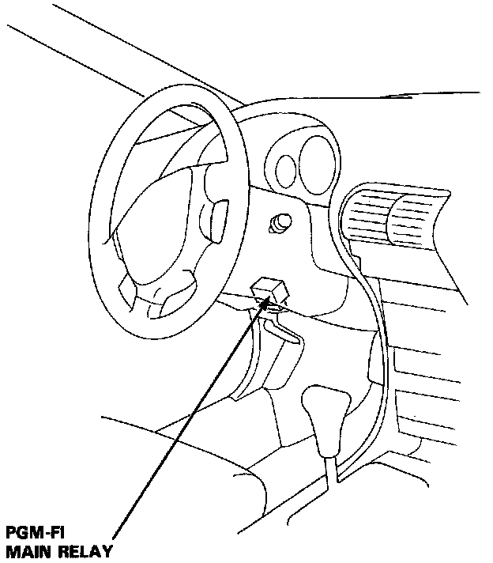

Main Relay (Computer/Fuel System): Service and Repair
WARNING: Before performing, be sure the ignition switch is OFF unless otherwise needed.PGM-FI Relay Location:

1. Locate Programmed Fuel Injection (PGM-FI) main relay under driver's side dashboard (7-wire).
2. Carefully separate connector from relay.
3. Connect connector to new relay.
4. Turn ignition switch ON, wait 2 seconds, then turn key to START.
5. If vehicle does not start, refer to On-Board Diagnosis.